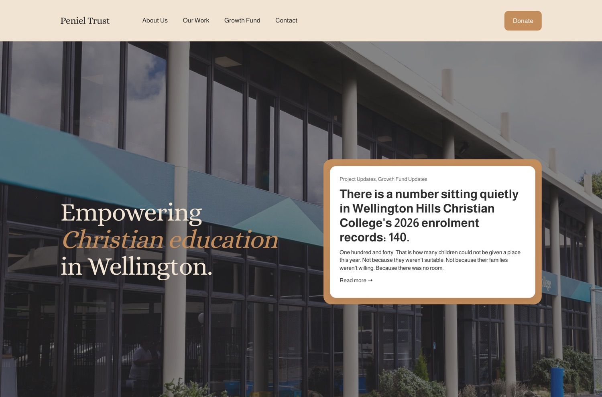
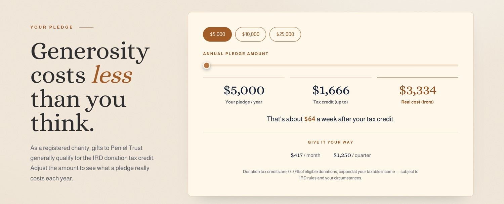
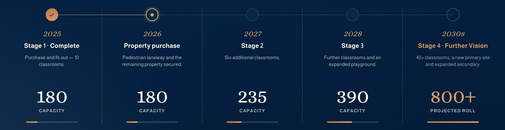
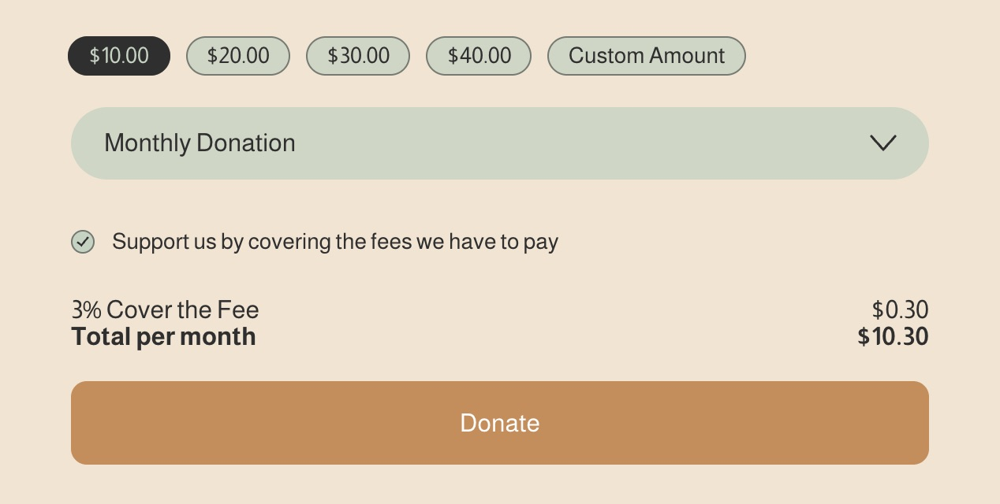
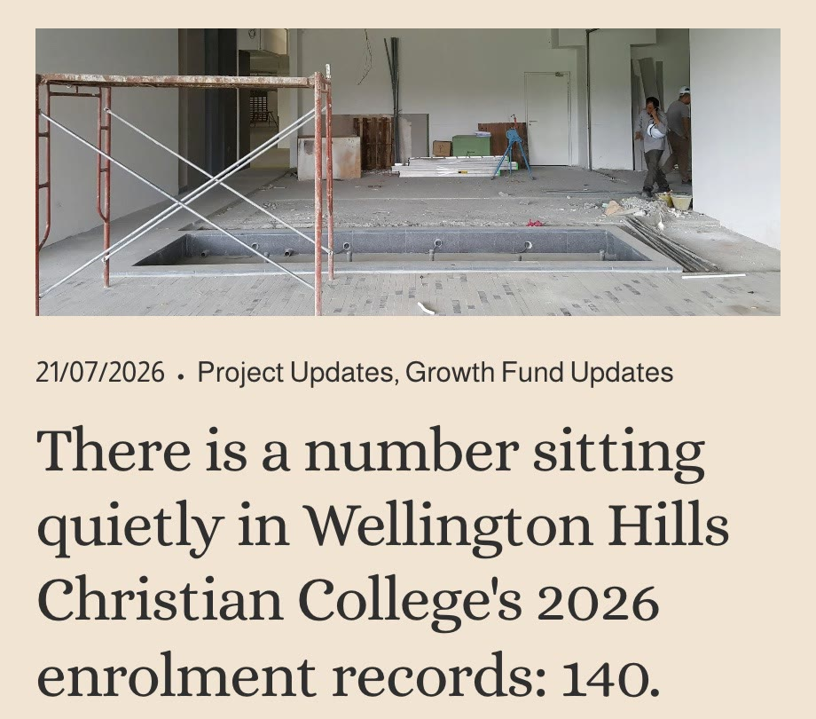

PenielTrust
A public home for the trust, with donations taken properly and receipts sent automatically.

At a glance
What they needed
The trust exists to expand access to high-quality, affordable Christian education. It needed a public home that could explain the mission, report progress to supporters, and make giving straightforward.
What I did
I built the site, set up donations, and made a Growth Fund campaign page with custom interactive blocks.
What changed
Donations come through and receipts go out automatically, with no admin by hand.
The Growth Fund page


The Growth Fund campaign page has custom interactive blocks, including a pledge calculator.
It shows a supporter what a five-year pledge really costs once the NZ donation tax credit comes back.
The page also carries a development plan, five stages that take the college from its first classrooms toward an 800-student campus.
Each pledge funds the stages still ahead.
Giving that runs itself
I set up donations from start to finish.
A supporter picks an amount and how often to give, from one-time to annual, and can choose to cover the fees the trust has to pay.

Project updates
The site tells the story clearly, with about, our work and project updates pages.
That’s where the trust reports progress to supporters.

The result
I’m still working with the trust, and new campaign pages go up as the fund grows.
“Kris was excellent at understanding what we were trying to achieve and translating our brief into professional, high-quality outcomes.”